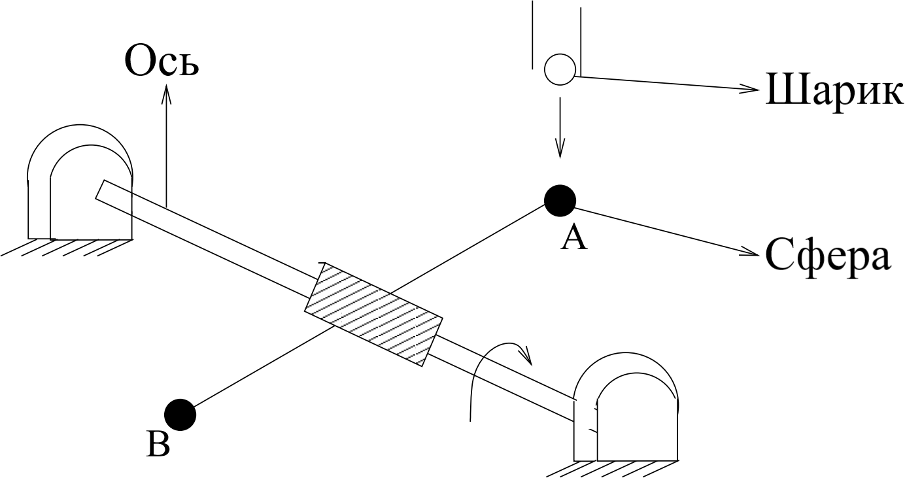
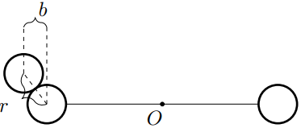

X23 (2023) — English translation
Consider the mechanical system shown in the figure. Two small spheres $A$ and $B$ of mass $m$ are fixed at the ends of a homogeneous rod of length $2l$ and mass $4m$, attached at the middle perpendicular to the horizontal axis. Above the initial position of the sphere $A$, in which the rod is horizontal and motionless, there is a vertical tunnel from which at specially selected moments of time a ball of mass $m$ flies out, colliding with the spheres and causing the system to rotate around its axis. The speed of the ejected ball just before the collision is $v$. As a result of the first collision, the system acquires a certain angular velocity $\omega_1$. When the sphere $B$ reaches the position in which the sphere $A$ was originally located, $B$ collides with a new ball, and the system acquires some angular velocity $\omega_2$, and so on. In all parts of the problem, consider all collisions to be elastic. Neglect the sizes of balls and spheres.

In this part of the problem, all collisions are central. There are no dissipations in the system.
As can be expected, the angular velocity of such a rotating system tends at $i\to{\infty}$ to a constant value $\omega^*$.
Hint: Use the variable $\omega'_i=\omega_i-v/l$.
Let now, instead of one pair of spheres, we have two pairs of them, placed on rods perpendicular to each other and the axis.
Let's go back to the system with one pair of spheres. In this part of the problem, non-central collisions of balls with spheres $A$ and $B$ are studied. There are no dissipations in the system (including friction between the escaping ball and the spheres). We will characterize the off-center impact by the parameter $k=b/r$, where $b < r$ is the impact parameter with which the ejected ball hits the sphere, and $r\ll{l}$ is the distance between the centers of the ball and the sphere when they come into contact (see Fig.).

Next, an arbitrary value of the parameter $k$ is considered.
In this part of the problem, the motion of the system under the influence of friction is studied. Under the influence of friction, a moment $M$ acts on the system, which is a certain function of the angular velocity $\omega$. Depending on the geometry of the system, the main contribution comes from: Dry friction – moment $M=\alpha I=\operatorname{const}$; Linear viscous friction – moment $M=\beta I\omega$, $\beta=\operatorname{const}$; Quadratic viscous friction – moment $M=\gamma I\omega^2$, $\gamma=\operatorname{const}$. Here $I$ is the moment of inertia of the system. Instead of the moment of inertia of the system and the speed of the ball, we introduce parameters $\varepsilon=\frac{ml^2}I$ and $\omega_0=\cfrac vl$. At all points in part C the impacts are central and elastic. Express all answers in points C1 – C3 using $\varepsilon$ and $\omega_0$.
Here $I$ is the moment of inertia of the system. Instead of the moment of inertia of the system and the speed of the ball, we introduce parameters $\varepsilon=\frac{ml^2}I$ and $\omega_0=\cfrac vl$. At all points in part C the impacts are central and elastic.
Express all answers in points C1 – C3 through $\varepsilon$ and $\omega_0$.
Let us now proceed directly to the exact calculation of the steady-state average angular velocities in each of the three modes. To do this, together with the equation for a collision with a ball, you need to solve the equation of free motion of the system and find stationary points.
Express your answers in C5 and C6 using $\varepsilon$, $\beta$ and $\omega_0$.
Express your answers in C7 and C8 in terms of $\varepsilon$, $\gamma$ and $\omega_0$.
Source: https://pho.rs/p/3160